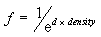
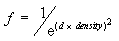
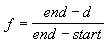

description: Defines constants that describe the fog mode. ms.assetid: cd83c914-bc1d-4f66-b5a6-7984b7ec52cd title: D3DFOGMODE enumeration (D3D9Types.h) ms.topic: reference ms.date: 05/31/2018 topic_type:
Defines constants that describe the fog mode.
typedef enum D3DFOGMODE {
D3DFOG_NONEÂ Â Â Â Â Â Â Â Â = 0,
D3DFOG_EXPÂ Â Â Â Â Â Â Â Â Â = 1,
D3DFOG_EXP2Â Â Â Â Â Â Â Â Â = 2,
D3DFOG_LINEARÂ Â Â Â Â Â Â = 3,
D3DFOG_FORCE_DWORDÂ Â = 0x7fffffff
} D3DFOGMODE, *LPD3DFOGMODE;
D3DFOG_NONE
No fog effect.
D3DFOG_EXP
Fog effect intensifies exponentially, according to the following formula.

D3DFOG_EXP2
Fog effect intensifies exponentially with the square of the distance, according to the following formula.

D3DFOG_LINEAR
Fog effect intensifies linearly between the start and end points, according to the following formula.

This is the only fog mode currently supported.
D3DFOG_FORCE_DWORD
Forces this enumeration to compile to 32 bits in size. Without this value, some compilers would allow this enumeration to compile to a size other than 32 bits. This value is not used.
The values in this enumerated type are used by the D3DRS_FOGTABLEMODE and D3DRS_FOGVERTEXMODE render states.
Fog can be considered a measure of visibility: the lower the fog value produced by a fog equation, the less visible an object is.
| Requirement | Value |
|---|---|
| Header | D3D9Types.h |
Â
Â